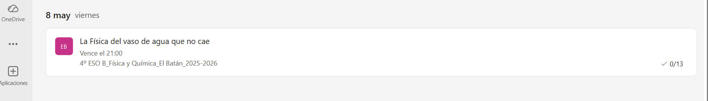
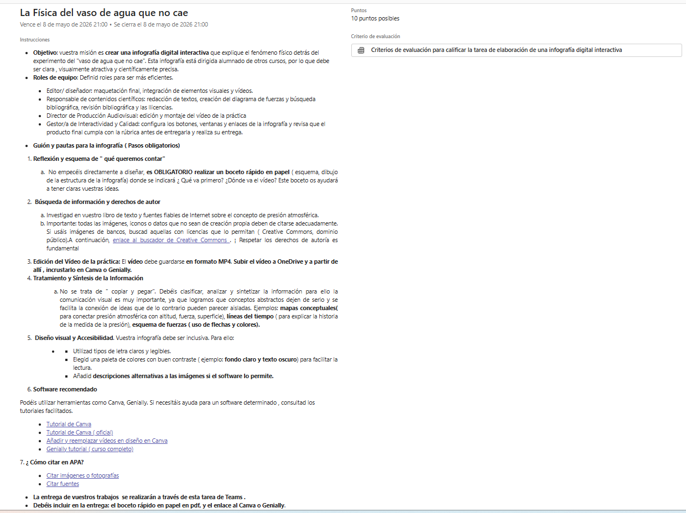

Texto
¿ Alguna vez te has fijado en cómo cambia la presión cuando subes al Padrún o vas hacia Pola de Lena? Aunque no lo notemos, sobre cada habitante de Mieres hay una columna de aire de varios kilómetros que pesa lo mismo que un coche pequeño.
En estas sesiones ( 9-12), entenderemos por qué " pesa" el aire que respiramos en la Cuenca.
- Saberes básicos
- Presión desde los cálculos teóricos de P= F/S.
- Fuerzas y presión en fluidos: efectos de las fuerzas y la presión sobre líquidos y gases.
- Principio de Pascal
- Principio fundamental de la hidrostática
- Principio de Arquímedes
- Presión atmosférica: experimento de Torricelli
- Relación de la presión atmosférica con la altitud: ¿ Por qué la presión atmosférica es mayor en la calle Manuel LLaneza que en la cima del Picayu?
- Meteorología: Influencia de la presión en el clima asturiano ( anticiclones y borrascas)
- Presión desde los cálculos teóricos de P= F/S.
- Actividades:
- Problemas variados sobre los saberes básicos anteriores.
- Práctica de laboratorio: " El vaso de agua que no cae"
- Infografía interactiva: " La física del vaso de agua que no cae"
Práctica de laboratorio: " El vaso de agua que no cae"
- Introducción: Desafiando a la Gravedad en Mieres
La presión atmosférica es la fuerza por unidad de superficie que ejerce el aire sobre los cuerpos sumergidos en la atmósfera. En esta práctica se analiza el equilibrio de fuerzas entre la presión hidrostática del líquido y la presión atmosférica exterior.
- Objetivos:
- Demostrar de forma experimental la existencia de la presión atmosférica
- Comprobar el equilibrio de presiones mediante la inversión de un sistema fluido-sólido.
- Identificar las causas que provocan la pérdida de este equilibrio de presiones.
- Materiales
- Vaso de cristal
- Agua
- Cartulina o trozo de papel rígido ( tamaño que tape toda la boca del vaso)
- Un recipiente ( ¡ por si la presión falla!)
- Procedimiento ( Recuerda que debéis grabar el vídeo para incluirlo en la infografía interactiva)
-
- LLenado de agua hasta el borde del vaso o rebosando un poco
- Se coloca la cartulina, asegurando que toque todo el borde.
- Giro ( dar la vuelta con decisión)
- Se comprueba que el agua queda dentro del vaso al retirar la mano que sujeta la cartulina.
-
- Explicación del fenómeno:
Infografía digital interactiva " La Física del vaso de agua que no cae"
- Objetivo: vuestra misión es crear una infografía digital interactiva que explique el fenómeno físico detrás del experimento del "vaso de agua que no cae". Esta infografía está dirigida alumnado de otros cursos, por lo que debe ser clara , visualmente atractiva y científicamente precisa.
- Roles de equipo: Definid roles para ser más eficientes.
- Editor/ diseñador: maquetación final, integración de elementos visuales y vídeos.
- Responsable de contenidos científicos: redacción de textos, creación del diagrama de fuerzas y búsqueda bibliográfica, revisión bibliográfica y las licencias.
- Director de Producción Audiovisual: edición y montaje del vídeo de la práctica
- Gestor/a de Interactividad y Calidad: configura los botones, ventanas y enlaces de la infografía y revisa que el producto final cumpla con la rúbrica antes de entregarla y realiza su entrega.
- Guión y pautas para la infografía ( Pasos obligatorios)
- Reflexión y esquema de " qué queremos contar"
- No empecéis directamente a diseñar, es OBLIGATORIO realizar un boceto rápido en papel ( esquema, dibujo de la estructura de la infografía) donde se indicará ¿ Qué va primero? ¿Dónde va el vídeo? Este boceto os ayudará a tener claras vuestras ideas.
- Búsqueda de información y derechos de autor
- Investigad en vuestro libro de texto y fuentes fiables de Internet sobre el concepto de presión atmosférica.
- Importante: todas las imágenes, iconos o datos que no sean de creación propia deben de citarse adecuadamente. Si usáis imágenes de bancos, buscad aquellas con licencias que lo permitan ( Creative Commons, dominio público).A continuación, enlace al buscador de Creative Commons . ¡ Respetar los derechos de autoría es fundamental
- Edición del Vídeo de la práctica: El vídeo debe guardarse en formato MP4. Subir el vídeo a OneDrive y a partir de allí , incrustarlo en Canva o Genially.
- Tratamiento y Síntesis de la Información
-
- No se trata de " copiar y pegar". Debéis clasificar, analizar y sintetizar la información para ello la comunicación visual es muy importante, ya que logramos que conceptos abstractos dejen de serlo y se facilita la conexión de ideas que de lo contrario pueden parecer aisladas. Ejemplos: mapas conceptuales( para conectar presión atmosférica con altitud, fuerza, superficie), líneas del tiempo ( para explicar la historia de la medida de la presión), esquema de fuerzas ( uso de flechas y colores).
-
- Diseño visual y Accesibilidad. Vuestra infografía debe ser inclusiva. Para ello:
-
-
- Utilizad tipos de letra claros y legibles.
- Elegid una paleta de colores con buen contraste ( ejemplo: fondo claro y texto oscuro) para facilitar la lectura.
- Añadid descripciones alternativas a las imágenes si el software lo permite.
-
-
- Software recomendado
Podéis utilizar herramientas como Canva, Genially. Si necesitáis ayuda para un software determinado , consultad los tutoriales facilitados.
7. ¿ Cómo citar en APA?
La entrega de vuestros trabajos se realizarán a través de la tarea de Teams correspondiente.
Nota: Se recomienda este método para asegurar la compatibilidad con la nueva versión de Teams v2
Entrega de la tarea ( SOLO UNA PERSONA DEL EQUIPO)
Para entregar vuestro trabajo, seguid estos pasos en Microsoft Teams:
Abrir Microsoft Teams y ve al equipo de clase ( antes de entregar, debéis subir previamente el vídeo a OneDrive, las instrucciones están a continuación)
En el menú lateral en nuestro equipo de clase, ir a Tareas.
Seleccionad la tarea, haciendo doble clic en ella


Recordad añadir a la entrega:
- El enlace dando permiso solo de lectura a cualquier persona que tenga el enlace, para poder visualizar el Canva o Genially
- Boceto rápido en papel en formato pdf.
Por último, pulsar el botón entregar.
Rúbrica
| Sobresaliente | Notable | Aprobado | Insuficiente | No entregado | |
|---|---|---|---|---|---|
| Conocimiento de Física y Química | Demuestra una comprensión profunda de la presión atmosférica. El diagrama de fuerzas es preciso, completo y explica perfectamente el fenómeno. (2) | Explica bien el concepto de presión atmosférica. El diagrama de fuerzas está presente y es correcto, aunque podría ser más claro. (1.4) | La explicación es superficial. El diagrama de fuerzas contiene errores menores o es incompleto. (1.2) | No se explica la presión atmosférica o la explicación es errónea. El diagrama de fuerzas falta o es totalmente incorrecto. (1) | No realiza el apartado (0) |
| Grabación y producción del vídeo | El vídeo es original, de alta calidad , con buen audio y explica claramente el experimento. Está perfectamente integrado en la infografía. (2) | El vídeo es correcto, se entiende y está presente. Podría mejorar la calidad técnica de audio o imagen. (1.4) | El vídeo tiene fallos de audio/imagen que dificultan la comprensión, o solo aparece como un enlace externo. (1.2) | El vídeo tiene muchos fallos. (1) | No realiza el apartado (0) |
| Búsqueda y autoría | Cita todas las fuentes de información e imágenes utilizadas de forma precisa. Demuestra respeto por la autoría y la ética digital. (2) | Cita la mayoría de las fuentes, pero falta alguna referencia de imagen o datos específicos. (1.4) | Cita solo fuentes generales o la citación es incompleta y desorganizada. (1.2) | No se citan apenas fuentes. (1) | No realiza el apartado (0) |
| Comunicación visual y accesibilidad | Atractiva, organizada, con fuentes legibles y buen uso del color. Cumple totalmente con las pautas de accesibilidad para un público amplio. (2) | Diseño aceptable, con buena organización. Cumple con la mayoría de las pautas de accesibilidad ( fuentes claras, colores contrastados). (1.4) | Diseño desorganizado o que dificulta la lectura ( letra pequeña, colores sin contraste). Fallos en la accesibilidad. (1.2) | Diseño muy pobre, ilegible o que dificulta gravemente la comprensión para cualquier usuario. (1.25) | No realiza el apartado (0) |
| Competencia digital | Utiliza de forma autónoma y creativa herramientas digitales ( software de diseño y edición de un vídeo) para crear un producto original y de calidad. (2) | Utiliza adecuadamente las herramientas digitales, aunque podría explorar más sus funcionalidades creativas. (1.4) | Muestra dificultades en el manejo del software, lo que se refleja en la calidad final del producto. (1.2) | No demuestra manejo de las herramientas digitales o ha delegado totalmente la tarea digital. (1) | No realiza el apartado (0) |
- Actividad
- Nombre
- Fecha
- Puntuación
- Notas
- Reiniciar
- Imprimir
- Aplicar
- Ventana nueva